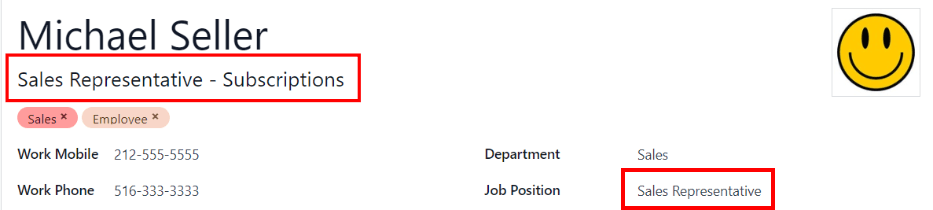
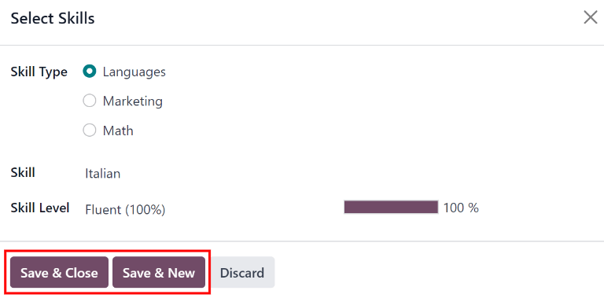

New employees
When a new employee is hired, the first step is to create a new employee record. This record is a centralized place where all important information about the employee is stored, including general information, job history and skills, various work information, personal details, documents, and more.
To begin, open the app, then click the New button in the upper-left corner. Doing so reveals a blank employee form.
Proceed to fill out the required information, along with any additional details.

Note
The current company phone number and name are populated in the Work Phone and Company fields. If the Appraisals application is installed, the Next Appraisal Date field is populated with a date six months from the current date.
General information
The employee form automatically saves as data is entered. However, the form can be saved manually at any time by clicking the Save manually option, represented by a (cloud with an upwards arrow) icon.
Required fields
Employees Name: enter the employees name.
Company: from the drop-down menu in this field, select the company the new employee was hired by, or create a new company by typing the name in the field, and clicking Create or Create and edit from the mini drop-down menu that appears.

Optional fields
Photo: in the top-right image box of the employee form, click on the (pencil) edit icon to select a photo to upload.
Job Position: enter the employees job title under their name, or select it from the Job Position field drop-down menu below to have this top field auto-populate. The Job Position field under the employee name can be modified, and does not need to match the selection made in the Job Position drop-down menu in the field below.
Example
While it is recommended to have the job positions match, the typed-in description in this top field can contain more specific information than the selected drop-down Job Position, if desired.
For instance, if someone is hired for a sales representative position configured as Sales Representative in the Recruitment app, that can be selected in the drop-down Job Position field.
In the typed-in Job Position field beneath the Employees Name field, the position could be more specific, such as
Sales Representative - Subscriptionsif the employee is focused solely on subscription sales.Tags: select a tag from the drop-down menu to add relevant tags to the employee. Any tag can be created in this field by typing it in. Once created, the new tag is available for all employee records. There is no limit to the amount of tags that can be added.
Work Contact Information: enter the employees Work Mobile, Work Phone, Work Email, and/or Company name, if not already auto-populated.
Department: select the employees department from the drop-down menu.
Job Position: select the employees job position from the drop-down menu. Once a selection is made, the Job Position field beneath the Employees Name field automatically updates to reflect the currently selected job position. These positions are from the Recruitment application, and reflect the currently configured job positions.
Manager: select the employees manager from the drop-down menu.
Coach: select the employees coach from the drop-down menu.
Next Appraisal Date: this field is only visible if the Appraisals application is installed. The date automatically populates with a date that is computed according to the settings configured in the Appraisals application. This date can be modified using the calendar selector.
Note
After a Manager is selected, if the Coach field is blank, the selected manager automatically populates the Coach field.
Tip
To make edits to the selected Department, Manager, Coach, or Company, click the Internal Link arrow next to the respective selection. The Internal Link arrow opens the selected form, allowing for modifications. Click Save after any edits are made.
Additional information tabs
Resum tab
Resum
Next, enter the employees work history in the Resum tab. Each resum line must be entered individually. When creating an entry for the first time, click Create a new entry, and the Create Resum lines form appears. After an entry is added, the Create a new entry button is replaced with an Add button. Enter the following information for each entry.

Title: type in the title of the previous work experience.
Employee: select the employee from the drop-down menu.
Type: from the drop-down menu, select either Experience, Education, Side Projects, Internal Certification, Completed Internal Training, or type in a new entry, then click Create (Type).
Display Type: from the drop-down menu, choose Classic for typical work experience, Certification for experience gained through a certification, or Course for non-certified classes.
Duration: enter the start and end dates for the work experience. To select a date, click the first empty field to reveal a calendar pop-up window. Proceed to use the < (left arrow) and > (right arrow) icons to scroll to the desired month, then click on the day to select it. Repeat this process to locate and select the end date. When the desired dates have been selected, click Apply.
Description: enter any relevant details in this field.
Once all the information is entered, click the Save & Close button if there is only one entry to add, or click the Save & New button to save the current entry and create another resum line.
Note
After the new employee form is saved, the current position and company is automatically added to
the Resum tab, with the end date listed as current.
Skills
An employees skills can be entered in the Resum tab in the same manner that a resum line is created.
In order to add a skill to an employee record, the skill types must be configured first. If no skill types are configured, a Create new Skills button appears in the Skills section of the Resum tab. Configure the skill types before adding any skills to the employee record.
If the skill types are configured, a Pick a skill from the list button appears instead. Click the Pick a skill from the list button, and select the following information for each skill.
Skill Type: select a skill type by clicking the radio button next to the skill type.
Skill: after selecting a Skill Type, the corresponding skills associated with that selected Skill Type appear in a drop-down menu. For example, selecting Language as the Skill Type presents a variety of languages to select from under the Skills field. Select the appropriate pre-configured skill, or type in a new skill, then click Create (new skill).
Skill Level: pre-defined skill levels associated with the selected Skill Type appear in a drop-down menu. First, select a Skill Level, then the progress bar automatically displays the pre-defined progress for that specific skill level. Skill levels and progress can be modified in the Skill Level pop-up form, which is accessed via the Internal Link arrow next to Skill Level field.
Click the Save & Close button if there is only one skill to add, or click the Save & New button to save the current entry and immediately add another skill.
To delete any line from the Resum tab, click the (trash can) icon to delete the entry. Add a new line by clicking the Add button next to the corresponding section.
Important
Only users with Officer: Manage all employees or Administrator rights for the Employees app can add or edit skills.
Skill types
In order to add a skill to an employees form, the Skill Types must be configured. Go to to view the currently configured skill types and create new skill types.
Note
The default skill of Languages is pre-configured as a skill type, but there are no specific language skills listed within that skill type. The Languages skill type must be fully configured before it can be used.
Click New and a new Skill Type form appears. Fill out all the details for the new skill type. Repeat this for all the needed skill types.
Skill Type: enter the name of the skill type. This acts as the parent category for more specific skills and should be generic.
Skills: click Add a line, and enter the Name for the new skill, then repeat for all other needed skills.
Levels: click Add a line, and enter the Name of the level. Next, click into the Progress field, and enter a percentage (0-100) for that level. Repeat for all additional levels, as needed.
Default Level: click the toggle on the level line to set that level as the default. Typically, the lowest level is set as the default, but any level can be chosen. The toggle turns green, indicating it is the default level for the skill. Only one level can be set as the default.
Example
To add a math skill set, enter
Mathin the Name field. Next, in the Skills field, enterAlgebra,Calculus, andTrigonometry. Last, in the Levels field enterBeginner,Intermediate, andExpert, with the Progress listed as25,50, and100, respectively. Last, click Set Default on theBeginnerline to set this as the default skill level.
The Skill Type form automatically saves as data is entered.
Tip
Once the form is completely filled out, click the Save manually button, represented by a cloud with an upwards arrow icon at the top of the screen, and the Levels rearrange in descending order, with the highest level at the top, and the lowest at the bottom, regardless of the default level and the order they were entered.
Work information tab
The Work Information tab is where the employees specific job related information is found. Their working schedule, various roles, who approves their specific requests (time off, timesheets, and expenses), their remote work schedule, and specific work location details are listed here.
Click on the Work Information tab to access this section, and enter the following information for the new employee:
Location: select the Work Address from the drop-down menu. To modify the address, hover over the first line (if there are multiple lines) of the address to reveal an Internal Link arrow. Click the Internal Link arrow to open up the company form, and make any edits.
Use the breadcrumb links to navigate back to the new employee form when done.
If a new work address is needed, add the address by typing it in the field, then click Create (new address) to add the address, or Create and edit to add the new address and edit the address form.
Approvers: to see this section, the user must have either Administrator or Officer: Manage all employees rights set for the Employees application. Using the drop-down menus, select the users responsible for approving an Expense, a Time Off request, Timesheet entries, and Attendance records for the employee.
Hover over any of the selections to reveal the Internal Link arrow.
Click the Internal Link arrow to open a form with the approvers Name, Email Address, Company, Phone, Mobile, and Default Warehouse fields. These can be modified, if needed.
Use the breadcrumb links to navigate back to the new employee form when done.
Important
The users that appear in the drop-down menu for the Approvers section must have Administrator rights set for the corresponding human resources role.
To check who has these rights, go to . Then, click on an employee, and check the Human Resources section of the Access Rights tab.
In order for the user to appear as an approver for Expenses, they must have either Team Approver, All Approver, or Administrator set for the Expenses role.
In order for the user to appear as an approver for Time Off, they must have either Officer:Manage all Requests or Administrator set for the Time Off role.
In order for the user to appear as an approver for Timesheets, they must have either Manager, Officer:Manage all contracts, or Administrator set for the Payroll role.
Remote Work: use the drop-down menu to select the default location the employee works from each day of the week. The default options are Home, Office, or Other.
A new location can be typed into the field, then click either Create (new location) to add the location, or Create and edit to add the new location and edit the form.
After edits are done, click Save & Close, and the new location is added, and populates the field.
Leave the field blank (Unspecified) for non-working days like Saturday and Sunday.
Note
It is also possible to add or modify work locations by navigating to . To modify a location, click on an existing location, then make any changes on the form.
Click New to create a new location, then enter the following information on the form. All fields are required.
Work Location: enter the name for the location. This can be as general or as specific, as needed, such as
HomeorBuilding 1, Second Floor, respectfully.Work Address: using the drop-down menu, select the address for the location.
Cover Image: click on the icon to select it for the Cover Image. Options are a house icon, an office building icon, and a GPS location marker icon.
Company: using the drop-down menu, select the company the location applies to. The current company populates this field, by default.

Schedule: select the Working Hours and Timezone for the employee. The Internal Link arrow opens a detailed view of the specific daily working hours. Working hours can be modified or deleted here.
Note
Working Hours are related to a companys working schedules, and an Employee cannot have working hours that are outside of a companys working schedule.
Each individual working schedule is company-specific. So, for multi-company databases, each company needs to have its own working schedules set.
If an employees working hours are not configured as a working schedule for the company, new working schedules can be added, or existing working schedules can be modified.
Working hours can be modified in the Payroll application, where they are referred to as Working Schedules.
For more information on how to create or modify Working Schedules in the Payroll application, refer to the Payroll documentation.
Planning: select a role from the drop-down menu for both the Roles and the Default Role fields. If the Default Role is selected as a role, it is automatically added to the list of Roles.
Important
The users that appear in the drop-down menu for the Approvers section must have Administrator rights set for the corresponding human resources role.
To check who has these rights, go to . Click on an employee, and check the Human Resources section of the Access Rights tab.
In order for the user to appear as an approver for Expenses, they must have either Team Approver, All Approver, or Administrator set for the Expenses role.
In order for the user to appear as an approver for Time Off, they must have either Officer or Administrator set for the Time Off role.
In order for the user to appear as an approver for Timesheets, they must have either Manager, Officer, or Administrator set for the Payroll role.
Note
Working Hours are related to a companys working times, and an employee cannot have working hours that are outside of a companys working times.
Each individual working time is company-specific. So, for multi-company databases, each company must have its own working hours set.
If an employees working hours are not configured as a working time for the company, new working times can be added, or existing working times can be modified.
To add or modify a working time, go to the . Then, either add a new working time by clicking New, or edit an existing one by selecting a Working Time from the list to modify it.
Refer to the Working schedules section of the payroll documentation for specific details on creating and editing working schedules.
After the new working time is created, or an existing one is modified, the Working Hours can be set on the employee form. In the Schedule section of the Work Information tab, select the employees working hours using the drop-down menu.
Private information tab
No information in the Private Information tab is required to create an employee, however, some information in this section may be critical for the companys payroll department. In order to properly process payslips and ensure all deductions are accounted for, the employees personal information should be entered.
Here, the employees Private Contact, Family Status, Emergency contact, Education, Work Permit, and Citizenship information is entered. Fields are entered either using a drop-down menu, ticking a checkbox, or typing in the information.
Private Contact: enter the Private Address, Email, and Phone for the employee. Then, enter the employees Bank Account Number using the drop-down menu.
If the bank is not already configured (the typical situation when creating a new employee), enter the bank account number, and click Create and edit... A Create Bank Account Number form loads. Fill in the necessary information, then click Save & Close.
Next, select the employees preferred Language from the drop-down menu. Then enter the Home-Work Distance in the field. This field is only necessary if the employee is receiving any type of commuter benefits.
Lastly, enter the employees license plate information in the Private Car Plate field.
Family Status: select the current Marital Status using the drop-down menu, either Single, Married, Legal Cohabitant, Widower, or Divorced. If the employee has any dependent children, enter the Number of Dependent Children in the field.
Emergency: type in the Contact Name and Contact Phone number of the employees emergency contact in the respective fields.
Education: select the highest level of education completed by the employee from the Certificate Level drop-down menu. Default options include Graduate, Bachelor, Master, Doctor, or Other.
Type in the Field of Study, and the name of the School in the respective fields.
Work Permit: if the employee has a work permit, enter the information in this section. Type in the Visa No (visa number), and/or Work Permit No (work permit number) in the corresponding fields.
Using the calendar selector, select the Visa Expiration Date, and/or the Work Permit Expiration Date, to enter the expiration date(s).
If available, upload a digital copy of the Work Permit document. Click Upload your file, navigate to the work permit file in the file explorer, and click Open.
Citizenship: this section contains all the information relevant to the citizenship of the employee. Some fields use a drop-down menu, as the Nationality (Country), Gender, and Country of Birth fields do.
The Date of Birth uses a calendar selector to select the date. First, click on the name of the month, then the year, to access the year ranges. Use the < (left) and > (right) arrow icons, navigate to the correct year range, and click on the year. Next, click on the month. Last, click on the day to select the date.
Type in the information for the Identification No (identification number), Passport No (passport number), and Place of Birth fields.
Lastly, if the employee is not a resident of the country they are working in, activate the checkbox next to the Non-resident field.
Note
Depending on the localization setting, other fields may be present. For example, for the United States, a SSN No (Social Security Number) field is present.
HR settings tab
This tab provides various fields for different information, depending on the country the company is located. Different fields are configured for different locations, however some sections appear regardless.
Status: select an Employee Type and, if applicable, a Related User, with the drop-down menus. The Employee Type options include Employee, Student, Trainee, Contractor, or Freelancer.
Important
Employees do not also need to be users. Employees do not count towards the Odoo subscription billing, while Users do count towards billing. If the new employee should also be a user, the user must be created.
After the employee is created, click the (gear) icon, then click Create User. A Create User form appears.
Type in the Name and Email Address. Next, select the Company from the drop-down menu.
Then, enter the Phone and Mobile numbers in the respective fields.
If a photo is available, click the Edit icon (which appears as a (pencil) icon) in the lower-left corner of the image box, which is located in the top-right corner of the form.
A file explorer pops up. Navigate to the file, then click Open to select it. Finally, click Save after all the information is entered, and the employee record is automatically updated with the newly-created user populating the Related User field.
Users can also be created manually. For more information on how to manually add a user, refer to the ../../general/users/ document.
Attendance/Point of Sale/Manufacturing: the employees PIN Code and Badge ID can be entered here, if the employee needs/has one. Click Generate next to the Badge ID to create a badge ID.
The PIN Code is used to sign in and out of the Attendance app kiosk, and a POS system.
Payroll: if applicable, enter the Registration Number of the Employee in this section.
Depending on the localization setting, the other items that appear in this field vary based on location. In addition, other sections may appear in this tab based on location. It is recommended to check with the payroll and/or accounting departments to ensure this section, as well as any other sections relating to payroll that may appear, are filled in correctly.
Application Settings: enter the employees Billing Time Target for the billing rate leader board in the Timesheets application. Next, enter the Hourly Cost in a XX.XX format. This is factored in when the employee is working at a work center.
If applicable, enter the Fleet Mobility Card number.
Note
Manufacturing costs are added to the costs for producing a product, if the value of the manufactured product is not a fixed amount. This cost does not affect the Payroll application.

Documents
All employee-related documents are stored in the Documents app. The number of associated documents is displayed in the Documents smart button above the employee record. Click on the smart button to access all documents.
Refer to documentation on the Documents app for more information.